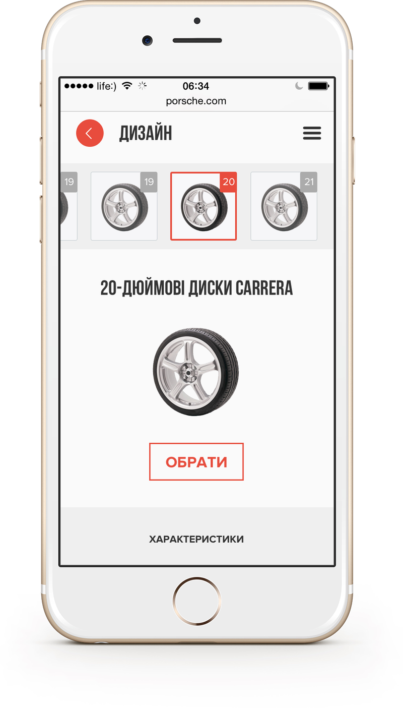

Improving Classic Experience
Project
Concept of mobile Build&Price tool
Role
UI/UX Designer
What is Porsche Car Configurator?
Traditionally, OEMs provide a siloed shopping experience, separating vehicle product information from shopping tools (B&P, search inventory, payment calculator, contact a dealer, etc.).The challenge for this concept is to improve upon the mobile shopping experience based on natural shopping behaviors, consumer needs, wants and expectations, which research has found to be non-linear.
Challenge
Design non-linear shopping experience for www.porsche.com mobile build&price tool
Issues to consider in current B&P tool
— Close to 50% drop-off rate at first step
— Process is very linear, doesn’t allow customer to choose what they care about first (e.g., color might be more important than trim level)
— Trim feature differences are not easily apparent; trims and packages are not merchandised well more important than trim level)
— Information and features are text heavy, not visual enough
Difficult to choose trims and packages according to features and specifications
A Sampling of Screens

